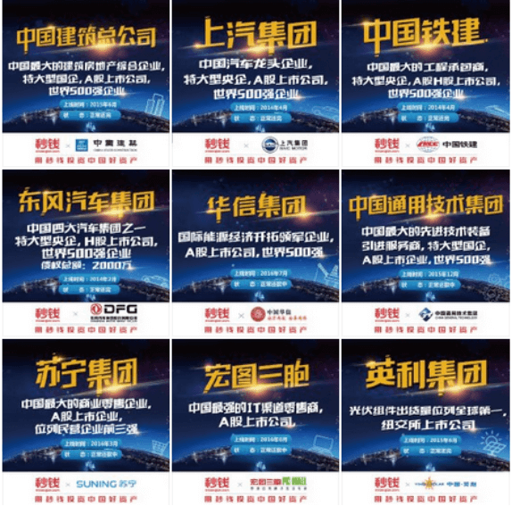

2016年11月10日，秒钱·拾财贷平台迎来了运营的第1000天。
行业里一直有这样一个共识，即要成为某个领域的专家，需要10000小时，这就是10000小时定律。对于秒钱而言，从2014年2月14日上线以来，已经跨过了10000小时的专业性积累门槛。而其核心的资产整合、产品开发、风险控制和运营管理能力，恰恰植根于秒钱上线以前数十年的行业积累。秒钱通过与多家实力雄厚的保理商、融资租赁、消费信贷等机构合作，为众多大型央企、国企、上市企业、供应商提供资金支持，为投资者提供安全稳健的理财服务。
2014年是互联网金融的爆发年，行业的发展蔚为大观，融资额、平台数量激增，尽管风险事件频发，依然获得了用户、投资人以及资本市场的认可。这一年，秒钱·拾财贷（拾财贷现已升级为拾财贷金融集团，并将理财端平台更名为秒钱）诞生了。靠着之前在融资租赁行业中积攒的资产资源，团队的用心打磨，在上线的第一个88理财节，平台单日成交额就高达1600万，并在1个月后，总成交额突破了1个亿。同时，为了满足投资者多样化的理财需求，平台推出了“活期赚”和“转让赚”两大类型产品。
2015年被认为是互联网金融的监管元年，行业在“野蛮生长”后开始“回归理性”。这一年，秒钱全线发力资产端 ，上线了东风、上汽、中建、英利等国企、央企、上市公司等优质企业直接债权资产构成的项目资源，其收益的安全性与稳定性，引发投资者的阵阵抢购热潮，平台累计成交额破十个亿。同时，为了使得用户投资体验更为流畅、快捷，平台推出了秒钱APP。并在3个月后，下载量就突破了100万次。此外，秒钱还积极推动行业交流和合规性建设，联合发起成立福建省互联网金融协会，同时当选“投融资行业协会”副会长单位。

2016年，行业进入了整顿期，互金平台正经历着发展与转型的阵痛期。严格意义上来说，秒钱并不属于网贷平台，但监管条例的出台，秒钱加快了平台合规化的进程。据官方透露，平台的资金存管和金融备案都在紧锣密鼓地进行中。目前，平台的用户数已经突破200万。
秒钱CEO钱道长表示，互联网金融的发展，本质上是要通过提升资源配置效率，为个体和社会创造持续的价值。这也是秒钱创立的初衷，通过一头对接实体经济中最活跃的产业部门和企业，一头对接广大个人投资者和其所代表的海量社会存量资金，从而实现双方的融资和财富升值需求。监管政策的落地，不仅正式为“互联网金融”正名，也推动行业发展更加规范化、透明化。秒钱未来将继续合规经营，不断强化风控，真正实现让人人享有财富自由。